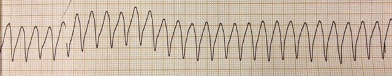
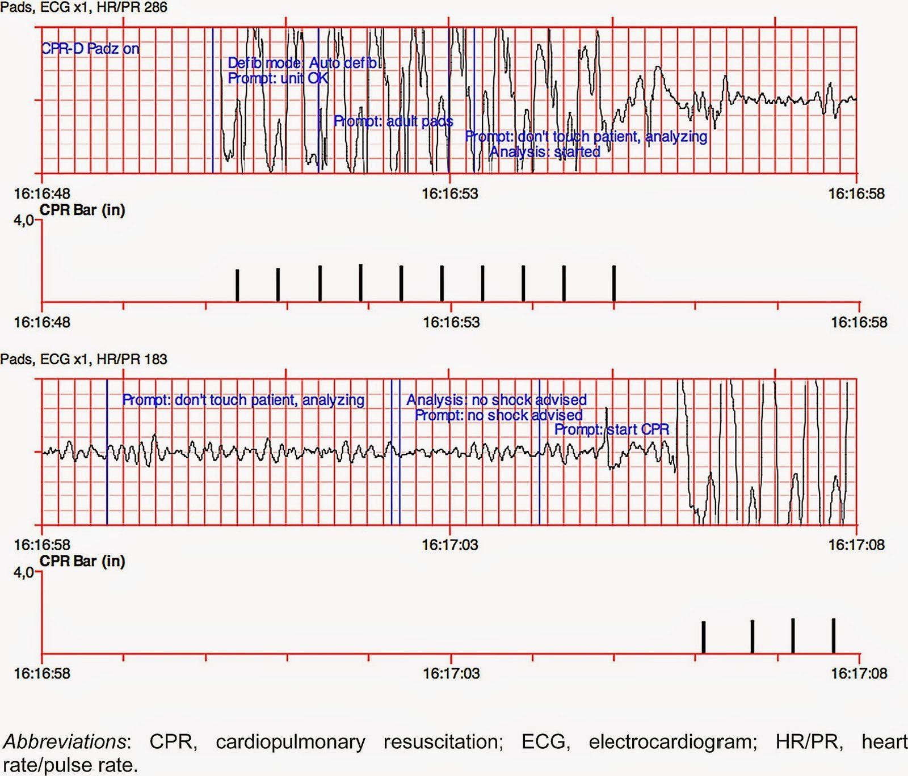

10/04/2015 — Nhịp nhanh thất vô mạch – vì sao AED không khuyến cáo sốc điện?
Bản dịch tiếng Việt của bài "Pulseless ventricular tachycardia – why did the AED not advise a shock?" – Dr. Smith’s ECG Blog. Giữ nguyên toàn bộ 2 hình ảnh của bản gốc.
Ca này do bạn tôi, Dr. Victoria Stephens, gửi đến. Cô là bác sĩ nội trú (registrar) Y học Cấp cứu năm thứ ba tại
Đại học Witwatersrand ở Johannesburg, Nam Phi, và là một nhân tố quý giá của FOAMed (giáo dục y khoa mở, miễn phí). Hãy theo dõi cô trên Twitter: @EMcardiac.
Ca bệnh
Một người đàn ông 71 tuổi nhập ICU vì nhiễm khuẩn huyết trên nền giảm bạch cầu trung tính
biến chứng sốc nhiễm khuẩn. Ông được đặt nội khí quản, thở máy và được
bắt đầu truyền adrenaline để duy trì huyết áp. Điện tâm đồ
lúc nhập viện bình thường. Sau ba mươi sáu giờ nằm ICU, ông
bị ngừng tim. Monitor cho thấy nhịp nhanh QRS rộng (wide complex tachycardia).
Hồi sinh tim phổi (CPR) được bắt đầu trong khi máy khử rung được đưa đến giường. Một
bác sĩ được gọi từ khoa cấp cứu (ED) lên hỗ trợ. Miếng dán được gắn lên
bệnh nhân và điều dưỡng chuyển máy khử rung sang chế độ AED. Dải nhịp
sau đây đã được ghi lại (dĩ nhiên là trên một monitor riêng, tách biệt với AED):


Đội
báo động “code blue” nhận ra nhịp này là nhịp nhanh thất
và cần khử rung ngay lập tức. Họ chờ chức năng AED
của máy khử rung khuyến cáo sốc điện. Thay vào đó, máy cứ liên tục báo
“…đang phân tích…đang phân tích”. Máy không khuyến cáo sốc. Vị bác sĩ không thể
nhớ cách vận hành chế độ bằng tay của máy khử rung AED (đây là loại máy khử rung có chế độ AED; không phải máy khử rung nào cũng có chế độ này). Vì AED
không khuyến cáo sốc, anh cho rằng máy khử rung bị hỏng và gọi
người mang một máy khử rung khác từ khoa cấp cứu lên. CPR vẫn được tiếp tục,
adrenaline và amiodarone đã được tiêm. Đến lúc chiếc máy khử rung thứ hai tới nơi, bệnh nhân đã tái lập tuần hoàn tự nhiên (ROSC). Ít
lâu sau, bệnh nhân chuyển về nhịp xoang bình thường.
Bình luận
Chuyện gì đã xảy ra? Tại sao AED không nhận ra một ca VT rõ ràng đến vậy? Máy khử rung có bị hỏng không?
Không, máy khử rung không hỏng. Đúng hơn là công nghệ này chưa hoàn hảo.
AED hoạt động như thế nào?
Máy
khử rung tự động bên ngoài (AED) ban đầu được thiết kế để
người không chuyên hoặc lực lượng phản ứng đầu tiên, vốn có ít hoặc không có kinh nghiệm về
khử rung, sử dụng nhằm cải thiện tỷ lệ sống còn sau ngừng tim
ngoài bệnh viện (OHCA) (1). AED dùng một Thuật toán Phân tích Nhịp (Rhythm Analysis Algorithm – RAA),
về cơ bản là một phần mềm được lập trình để phân biệt
nhịp sốc được với nhịp không sốc được. Sau đó RAA ra lệnh cho
AED khuyến cáo hoặc không khuyến cáo sốc. RAA dùng tới 18 thuật toán nội bộ
để xác định một nhịp có sốc được hay không; quan trọng
nhất trong số đó là: 1) tần số tim, 2) độ rộng QRS và 3) biên độ QRS.
Đối
với VT, RAA được lập trình để chỉ nhận diện VT là nhịp sốc được ở
những tần số tim nhất định. Với đa số AED, tần số này là trên 150
nhịp/phút (2). Lý do của việc này gồm hai điểm: 1) ngăn người không chuyên
khử rung nhầm một VT còn tưới máu ở bệnh nhân có thể vẫn còn mạch, và 2) bệnh nhân có nhiều khả năng ngừng tim do VT hơn khi tần số
tim trên 150.
Máy khử rung chế độ bằng tay hoạt động như thế nào?
Không
có RAA. Nhân viên y tế tự quyết định nhịp có sốc được hay không
và có nên sốc hay không. Số joule cho mỗi lần sốc cũng
do người vận hành cài đặt.
Khi nào RAA trong AED có thể thất bại?
Nhiều
nghiên cứu đã chứng minh tính an toàn và hiệu quả của AED trong ngừng
tim.(1) Các nghiên cứu này không chỉ cho thấy cải thiện tỷ lệ sống còn mà còn
cải thiện kết cục thần kinh. Tuy nhiên, như với bất kỳ thiết bị nào, sai sót vẫn
xảy ra. Trong một số hoàn cảnh, RAA trong AED có thể không nhận ra nhịp sốc được hoặc khuyến cáo sai việc sốc một nhịp không sốc được.
Những hoàn cảnh đó là:
1) Ảnh hưởng của nhiễu (artifact)
a. Gai
tạo nhịp và máy khử rung tim cấy được có thể gây nhiễu,
cản trở chức năng của RAA.
b. Nhiễu do chuyển động gây ra bởi ép
tim, thao tác trên bệnh nhân, rung lắc khi vận chuyển bằng xe
cứu thương, nhịp thở và co giật cũng có thể cản trở RAA.
Dưới đây là một ví dụ trong đó nhiễu từ bên ngoài xuất hiện ngay đầu
quá trình phân tích của AED.(3) AED đã khuyến cáo sai là không sốc với
ca rung thất sóng lớn (coarse VF) này.


[Hình được dùng với sự cho phép từ: Calle PA và cs. Inaccurate treatment decisions of automated external
defibrillators used by emergency medical services personnel: Incidence,
cause and impact on outcome. Resuscitation 2015;88:68-74]
2) Loại nhịp sốc được: AED phát hiện VF tốt hơn VT
Một số
nghiên cứu đã đánh giá độ chính xác của RAA bằng cách tải về các dải
điện tâm đồ và các phản hồi khuyến cáo từ mô-đun bộ nhớ của AED. (3-5) Các
nghiên cứu này cho thấy AED phát hiện đúng VF chính xác hơn
VT; AED có độ đặc hiệu 100% và độ nhạy 95% với rung thất sóng lớn.
AED cũng cho thấy độ chính xác tương tự trong việc phát hiện đúng
các nhịp không sốc được như PEA, nhịp xoang bình thường, rối loạn nhịp
trên thất và vô tâm thu.
Tuy nhiên,
AED kém tin cậy hơn nhiều trong việc phát hiện đúng VT: độ
nhạy với VT trong các nghiên cứu này chỉ dao động từ 63% đến 83%,
cho thấy trong khá nhiều trường hợp máy không khuyến cáo sốc dù VT
thực sự hiện diện.
Khuyến cáo sốc
không nhất quán cũng đã được ghi nhận với VT đa dạng,
bao gồm cả phân nhóm xoắn đỉnh (Torsades de Pointes). Một máy AED đã không khuyến cáo sốc với
bất kỳ nhịp xoắn đỉnh nào mà nó được thử nghiệm(!)(2).
Một số tác giả đã khuyến nghị các nhà sản xuất cải tiến
thuật toán, và các bác sĩ cần nhận thức được những cạm bẫy tiềm ẩn
khi sử dụng chúng.
3) Tần số VT
Như
đã đề cập ở trên, RAA của một số AED được cài đặt để khuyến cáo sốc nếu
tần số VT trên 150. Các dạng VT chậm hơn sẽ không được khuyến cáo
sốc, ngay cả khi bệnh nhân đang ngừng tim và cần được sốc. Mặc dù
VT tần số cao hơn có nhiều khả năng gây ngừng tim hơn,
bệnh nhân có chức năng tâm thu kém có thể không dung nạp được VT bền bỉ
130-150 nhịp/phút và thực sự có thể đang ngừng tim hoặc gần ngừng tim. (2). Trong một nghiên cứu gần đây, một số AED chỉ khuyến cáo
sốc nếu tần số VT vượt quá 180, và một số khác chỉ khi trên 250 (!).(6)
Tóm lại:
Nhiều
nghiên cứu đã chỉ ra rằng AED rất chính xác trong phát hiện VF và
khuyến cáo sốc gần như 100% số lần. AED đã được chứng minh làm giảm
tử vong trong ngừng tim, đặc biệt là OHCA.
Tương tự, AED nhận diện đáng tin cậy các nhịp xoang, nhịp trên thất và vô tâm thu.
AED
kém chính xác hơn nhiều khi xác định VT, ở cả dạng
đơn dạng lẫn đa dạng. Nếu AED không nhận ra VT,
VT cuối cùng sẽ thoái biến thành VF, và khi đó AED có nhiều
khả năng nhận ra hơn. Tuy nhiên, sự chậm trễ này có thể gây hại đáng kể
cho kết cục của bệnh nhân, vì thời gian đến lúc khử rung có ý nghĩa quyết định đối với
khả năng sống sót.
Với
các ca ngừng tim do VT, nhân viên y tế được đào tạo vượt trội hơn AED. Những nhân viên có máy khử rung với cả chế độ bằng tay lẫn chế độ AED cần biết cách nhận diện VT, hoặc nhịp nhiều khả năng là VT, biết sử dụng AED, và nếu đang dùng máy khử rung ở chế độ AED thì phải biết cách chuyển sang chế độ bằng tay.
Tài liệu tham khảo:
1.Part
6: Electrical therapies: automated external defibrillators,
defibrillation, cardioversion and pacing. 2010 American Heart
Association Guidelines for Cardiopulmonary Resuscitation and Emergency
Cardiovascular Care [Phần 6: Các liệu pháp điện: máy khử rung tự động bên ngoài, khử rung, sốc điện chuyển nhịp và tạo nhịp. Hướng dẫn năm 2010 của Hội Tim mạch Hoa Kỳ về Hồi sinh tim phổi và Chăm sóc tim mạch cấp cứu]. Link MS, Atkins DL, Passman RS, Halperin HR, Samson
RA, White RD, Cudnik MT và cs. Circulation 2010;122(phụ bản 3):s706-s719
2.Inconsistent
shock advisories for monomorphic VT and Torsade de Pointes – a
prospective experimental study on AEDs and defibrillators [Khuyến cáo sốc không nhất quán với VT đơn dạng và xoắn đỉnh – một nghiên cứu thực nghiệm tiến cứu trên AED và máy khử rung]. Fitzgerald A,
Johnson M, Hirsh J, Rich M-A, Fidler R. Resuscitation 2015 (Bài
đang in)
3.Inaccurate
treatment decisions of automated external defibrillators used by
emergency medical services personnel: Incidence, cause and impact on
outcome [Các quyết định điều trị không chính xác của máy khử rung tự động bên ngoài do nhân viên cấp cứu y tế sử dụng: tỷ lệ, nguyên nhân và ảnh hưởng đến kết cục]. Calle, PA, Mpotos N, Calle SP, Monsieurs KG. Resuscitation
2015;88:68-74
4.Performance
and error analysis of automated external defibrillator use in the
out-of-hospital setting [Phân tích hiệu năng và sai sót khi sử dụng máy khử rung tự động bên ngoài ở môi trường ngoài bệnh viện]. JL, Weinstein C. Ann Emerg Med
2001;38:262-267.
5.Machine
and operator performance analysis of automated external defibrillator
utilization [Phân tích hiệu năng của máy và của người vận hành khi sử dụng máy khử rung tự động bên ngoài]. Ko PC1, Lin CH, Lu TC, Ma MH, Chen WJ, Lin FY J Formos Med
Assoc. 2005 Jul;104(7):476-81
6.What
is ventricular tachycardia for automated external defibrillators? [Nhịp nhanh thất là gì đối với máy khử rung tự động bên ngoài?] Kette
F, Bozzola M, Locatelli A, Zoli A. J Clin Exp Cardiolog 2014;5:285
doi:10,4172/2155-9880.1000285